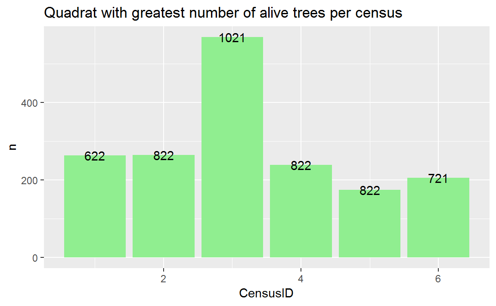
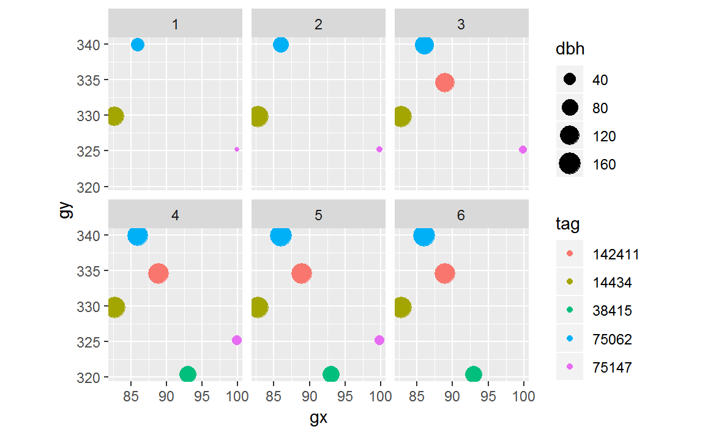

fgeo.data provides open datasets of ForestGEO. To get started run this:
(See Installation)
For an index of all available datasets and access see Reference.
vft)str(luquillo_vft_4quad, give.attr = FALSE)
#> Classes 'tbl_df', 'tbl' and 'data.frame': 3302 obs. of 32 variables:
#> $ DBHID : int 384550 384553 466764 384554 466765 611446 384555 466766 611447 384556 ...
#> $ PlotName : chr "luquillo" "luquillo" "luquillo" "luquillo" ...
#> $ PlotID : int 1 1 1 1 1 1 1 1 1 1 ...
#> $ Family : chr "Rubiaceae" "Urticaceae" "Urticaceae" "Urticaceae" ...
#> $ Genus : chr "Psychotria" "Cecropia" "Cecropia" "Cecropia" ...
#> $ SpeciesName : chr "berteroana" "schreberiana" "schreberiana" "schreberiana" ...
#> $ Mnemonic : chr "PSYBER" "CECSCH" "CECSCH" "CECSCH" ...
#> $ Subspecies : chr NA NA NA NA ...
#> $ SpeciesID : int 184 74 74 74 74 74 196 196 196 70 ...
#> $ SubspeciesID : chr NA NA NA NA ...
#> $ QuadratName : chr "721" "721" "721" "721" ...
#> $ QuadratID : int 327 327 327 327 327 327 327 327 327 327 ...
#> $ PX : num 127 130 130 127 127 ...
#> $ PY : num 404 405 405 406 406 ...
#> $ QX : num 6.98 9.51 9.51 6.95 6.95 6.95 9.88 9.88 9.88 8.56 ...
#> $ QY : num 4.11 4.53 4.53 5.74 5.74 5.74 8.94 8.94 8.94 9.08 ...
#> $ TreeID : int 692 698 698 706 706 706 711 711 711 714 ...
#> $ Tag : chr "100768" "100774" "100774" "100781" ...
#> $ StemID : int 851 858 858 866 866 866 871 871 871 874 ...
#> $ StemNumber : int 0 0 0 0 0 0 0 0 0 0 ...
#> $ StemTag : int 100768 100774 100774 100781 100781 100781 100786 100786 100786 100789 ...
#> $ PrimaryStem : chr NA NA NA NA ...
#> $ CensusID : int 4 4 5 4 5 6 4 5 6 4 ...
#> $ PlotCensusNumber: int 4 4 5 4 5 6 4 5 6 4 ...
#> $ DBH : num NA 185 NA 341 370 375 167 172 187 141 ...
#> $ HOM : num NA 1.3 NA 1.28 1.3 1.95 1.3 1.3 1.43 1.3 ...
#> $ ExactDate : Date, format: "2006-11-21" "2006-11-21" ...
#> $ Date : int 17126 17126 19023 17125 19023 20663 17125 19023 20663 17125 ...
#> $ ListOfTSM : chr "MAIN;DEADT" "MAIN;A" "MAIN;DEADT;R;ST" "MAIN;A" ...
#> $ HighHOM : int 1 1 1 1 1 1 1 1 1 1 ...
#> $ LargeStem : chr NA NA NA NA ...
#> $ Status : chr "dead" "alive" "dead" "alive" ...taxa)str(luquillo_taxa, give.attr = FALSE)
#> Classes 'tbl_df', 'tbl' and 'data.frame': 163 obs. of 21 variables:
#> $ ViewID : int 1 2 3 4 5 6 7 8 9 10 ...
#> $ SpeciesID : int 56 57 58 59 60 61 62 63 64 65 ...
#> $ SubspeciesID : chr NA NA NA NA ...
#> $ Family : chr "Fabaceae" "Euphorbiaceae" "Euphorbiaceae" "Fabaceae-papilionoideae" ...
#> $ Mnemonic : chr "AESAME" "ALCFLO" "ALCLAT" "ANDINE" ...
#> $ Genus : chr "Aeschynomene" "Alchorneopsis" "Alchornea" "Andira" ...
#> $ SpeciesName : chr "americana" "floribunda" "latifolia" "inermis" ...
#> $ Rank : chr NA NA NA NA ...
#> $ Subspecies : chr NA NA NA NA ...
#> $ Authority : chr "(Poir.) Rudd" "(Benth.) Müll. Arg." "Sw." "(W. Wright) Kunth ex DC." ...
#> $ IDLevel : chr "species" "species" "species" "species" ...
#> $ subspMnemonic : chr NA NA NA NA ...
#> $ subspAuthority: chr NA NA NA NA ...
#> $ FieldFamily : chr "Fabaceae" "Euphorbiaceae" "Euphorbiaceae" "Fabaceae" ...
#> $ Lifeform : chr NA NA NA NA ...
#> $ Description : chr NA NA NA NA ...
#> $ wsg : num 0.678 0.427 0.42 0.642 0.636 ...
#> $ wsglevel : chr "family" "species" "species" "species" ...
#> $ ListOfOldNames: chr NA NA NA NA ...
#> $ Specimens : chr NA NA NA NA ...
#> $ Reference : chr NA NA NA NA ...tree and stem)str(luquillo_tree6_random, give.attr = FALSE)
#> Classes 'tbl_df', 'tbl' and 'data.frame': 1004 obs. of 19 variables:
#> $ treeID : int 104 119 180 602 631 647 1086 1144 1168 1380 ...
#> $ stemID : int 143 158 225 736 775 793 1339 1410 1438 1702 ...
#> $ tag : chr "10009" "100104" "100171" "100649" ...
#> $ StemTag : chr "10009" "100104" "100174" "100649" ...
#> $ sp : chr "DACEXC" "MYRSPL" "CASARB" "GUAGUI" ...
#> $ quadrat : chr "113" "1021" "921" "821" ...
#> $ gx : num 10.3 182.9 164.6 149 38.3 ...
#> $ gy : num 245 410 410 414 245 ...
#> $ MeasureID: int 582850 578696 617049 614253 598429 614211 603131 616923 603151 614023 ...
#> $ CensusID : int 6 6 6 6 6 6 6 6 6 6 ...
#> $ dbh : num 195 44.9 46.1 33.1 139 248 176 75 613 NA ...
#> $ pom : chr "1.45" "1.25" "1.35" "1.3" ...
#> $ hom : num 1.45 1.26 1.34 1.3 1.25 1.35 1.42 1.3 1.25 NA ...
#> $ ExactDate: num 16911 17017 17017 17011 16912 ...
#> $ DFstatus : chr "alive" "alive" "alive" "alive" ...
#> $ codes : chr "MAIN;A" "MAIN;A" "SPROUT;A" "MAIN;A" ...
#> $ nostems : num 1 1 2 1 1 1 1 1 1 1 ...
#> $ status : chr "A" "A" "A" "A" ...
#> $ date : num NA NA NA NA NA NA NA NA NA NA ...Some datasets combine multiple censuses in a sigle dataframe.
lapply(luquillo_stem_1ha, function(column) head(unique(column)))
#> $treeID
#> [1] 46 47 49 50 51 54
#>
#> $stemID
#> [1] 46 47 48 49 50 51
#>
#> $tag
#> [1] "100001" "100008" "100011" "100016" "100017" "100021"
#>
#> $StemTag
#> [1] "100001" "100002" "100003" "100004" "100005" "100006"
#>
#> $sp
#> [1] "PSYBRA" "BYRSPI" "PSYBER" "CORBOR" "TABHET" "SCHMOR"
#>
#> $quadrat
#> [1] "921" "1021" "821" "721" "621" "922"
#>
#> $gx
#> [1] 164.35 164.93 164.13 165.12 165.17 163.65
#>
#> $gy
#> [1] 415.93 416.00 416.64 417.98 417.50 419.36
#>
#> $MeasureID
#> [1] 46 47 48 49 50 51
#>
#> $CensusID
#> [1] 1 2 3 4 5 6
#>
#> $dbh
#> [1] 22.6 15.0 12.8 10.9 13.4 10.8
#>
#> $pom
#> [1] "1.3" "1.5" NA "1.45" "1.35" "1.55"
#>
#> $hom
#> [1] 1.30 1.50 NA 1.45 1.33 1.37
#>
#> $ExactDate
#> [1] 8610 8609 8611 8623 8614 8622
#>
#> $DFstatus
#> [1] "alive" NA "stem dead" "broken below"
#> [5] "dead"
#>
#> $codes
#> [1] "MAIN;A" "SPROUT;A" "MAIN;A;NR" NA
#> [5] "SPROUT;LS" "SPROUT;LS;DP"
#>
#> $countPOM
#> [1] 1 NA
#>
#> $status
#> [1] "A" "P" "G" "D"
#>
#> $date
#> [1] NAThis allows summaries and visualizations by census.
For example, you may want to know which quadrats have the largest number of alive trees per census:
library(ggplot2)
library(dplyr)
#>
#> Attaching package: 'dplyr'
#> The following objects are masked from 'package:stats':
#>
#> filter, lag
#> The following objects are masked from 'package:base':
#>
#> intersect, setdiff, setequal, union
smry <- luquillo_stem_1ha %>%
filter(status == "A", !is.na(dbh)) %>%
group_by(CensusID, quadrat) %>%
summarise(n = n())
top_n(smry, 1)
#> Selecting by n
#> # A tibble: 6 x 3
#> # Groups: CensusID [6]
#> CensusID quadrat n
#> <int> <chr> <int>
#> 1 1 622 264
#> 2 2 822 265
#> 3 3 1021 569
#> 4 4 822 239
#> 5 5 822 175
#> 6 6 721 206ggplot(top_n(smry, 1), aes(CensusID, n)) +
geom_col(fill = "lightgreen") +
geom_text(aes(label = quadrat)) +
labs(title = "Quadrat with greatest number of alive trees per census")
#> Selecting by n
luquillo_stem_random_tiny %>%
filter(quadrat == "517") %>%
ggplot(aes(gx, gy)) +
geom_point(aes(size = dbh, color = tag)) +
facet_wrap("CensusID") +
coord_fixed()
#> Warning: Removed 10 rows containing missing values (geom_point).
elevation)str(luquillo_elevation)
#> List of 4
#> $ col :Classes 'tbl_df', 'tbl' and 'data.frame': 6565 obs. of 3 variables:
#> ..$ x : int [1:6565] 0 0 0 0 0 0 0 0 0 0 ...
#> ..$ y : int [1:6565] 0 5 10 15 20 25 30 35 40 45 ...
#> ..$ elev: num [1:6565] 364 364 363 363 363 ...
#> $ mat : num [1:101, 1:65] 364 364 363 363 363 ...
#> $ xdim: int 320
#> $ ydim: int 500
head(luquillo_elevation$col)
#> # A tibble: 6 x 3
#> x y elev
#> <int> <int> <dbl>
#> 1 0 0 364.
#> 2 0 5 364.
#> 3 0 10 363.
#> 4 0 15 363.
#> 5 0 20 363.
#> 6 0 25 363.To safely read raw data from .csv files, you need to know about the most important arguments of the functions you use to read the data. Below is a small example but you may also want to read these articles, showing two ways to read data:
# ForestGEO's database delivers tab delimited files with extension .csv.
# Instead of an url, you likely have a path to a directory in your computer.
url <- "http://bit.ly/fgeo-data-luquillo-taxa"
# TO AVOID ERRORS
# Specify columns class explicitely (for an example showing only some columns)
column_classes <- c(
ViewID = "integer",
SpeciesID = "integer",
SubspeciesID = "integer",
Family = "character",
Mnemonic = "character"
)
# Specify how to interprate missing values
na_strings <- c("", "NA", "NULL")
raw_luquillo_taxa <- read.delim(
file = url,
na.strings = na_strings,
colClasses = column_classes
)
some_rows <- some_columns <- 1:5
raw_luquillo_taxa[some_rows, some_columns]
#> ViewID SpeciesID SubspeciesID Family Mnemonic
#> 1 1 56 NA Fabaceae AESAME
#> 2 2 57 NA Euphorbiaceae ALCFLO
#> 3 3 58 NA Euphorbiaceae ALCLAT
#> 4 4 59 NA Fabaceae-papilionoideae ANDINE
#> 5 5 60 NA Rubiaceae ANTOBT
# Note these are the same as `column_classes` defined above
sapply(raw_luquillo_taxa[some_rows, some_columns], class)
#> ViewID SpeciesID SubspeciesID Family Mnemonic
#> "integer" "integer" "integer" "character" "character"